| 伝えるための心理統計 |
| 伝えるための心理統計 |
分散分析における誤差項を利用した母平均の信頼区間。 分散の等質性が満たされている必要がある。
| 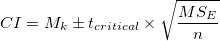 | (5.42) |
ただし、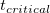 は誤差の自由度において算出する。
| 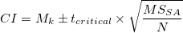 | (5.43) |
Jarmasz & Hollands (2009) は、被験者数だけでなく、繰り返しの数を考慮して
| 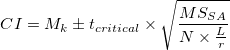 | (5.44) |
という改良案を出している1。
表4.1（p.128）のデータを用いて、裸足条件の母平均のCIを算出してみる。
 検定にもとづく方法
検定にもとづく方法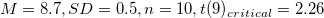なので、
| 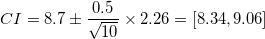 | (5.45) |
となる。
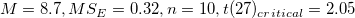なので、
| 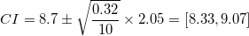 | (5.46) |
となる。
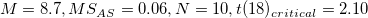なので、
| 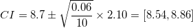 | (5.47) |
となる。
この場合は、3群が独立である限り、通常のt検定にもとづく方法を用いても、Loftus & Masson (1994) の分散分析にもとづく方法を用いても、結果にほとんど違いはなかった2。
さらに、2要因以上で対応がある場合には誤差平均平方をどのように指定するのかという問題が出てくる。 もし誤差平均平方間に2倍を超える差がなければ、これらをプールして用いる。 例えば、対応のある2要因の場合、 ということ。 メモ 対応のある2要因では、 対応ありの場合、分散の等質性に加えて球面性の仮定が満たされていないといけないことにも注意。
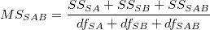
(5.48)
と平方和が分割される。
(5.49)
対応ありの要因の誤差と対応なしの要因の誤差をプールすることはできない。
メモ |
||||
対応あり要因となし要因の交互作用については、Hollands & Jarmasz (2010) が誤差平均平方のプールを提案しているという。 2要因混合計画でAが対応なし、Bが対応ありとすると、平方和は
と分割される。 この場合、主効果Aは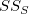が、主効果Bと交互作用ABは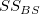が誤差平方和となる。 これらの平均平方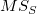と |
| 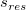 | 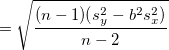 | (5.51) | ||
 |
 |
(5.52) |
傾きと切片の標準誤差は、
| 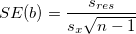 | (5.53) | ||
| 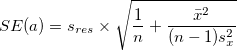 | (5.54) |
を利用して、それぞれの信頼区間を求めることができる。
ある値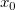に対応する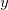値の信頼区間は、標準誤差
| 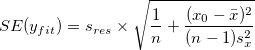 | (5.55) |
を利用して求める。
ある値に対応する値の予測区間は、標準誤差
| 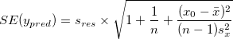 | (5.56) |
を利用して求める。
メモ |
値の信頼区間・予測区間とも、が平均 値の信頼区間とは、100回同じことを繰り返せば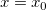に対応するの予測値は95%程度そこに含まれるだろう区間のことで、予測区間とは、であるサンプルを100個得れば、その値の95%は程度そこに含まれるだろう区間。 値の信頼区間とは、結局のところ回帰直線の信頼区間と同じになるような気がするのだが、違うのだろうか？ |
Rでは、predictにlmのオブジェクトを入れることで、信頼区間と予測区間（正確にはその上限と下限の に対する値）を得ることができる。 Rのデータcarsを用いた作図例は以下の通り。
に対する値）を得ることができる。 Rのデータcarsを用いた作図例は以下の通り。
head(cars) # データセットcarsを利用
plot(cars) # 散布図
fit.cars <- lm(dist~speed, data=cars) # 単回帰分析
summary(fit.cars) # 単回帰分析の結果
plot(cars); abline(fit.cars) # 散布図に回帰直線を引く
ci <- predict(fit.cars, interval="confidence", level=0.95) # 95%CI
ci <- as.data.frame(ci)
head(ci,3)
pi <- predict(fit.cars, newdata=data.frame(speed=cars$speed),
interval="prediction", level=0.95) # PI
pi <- as.data.frame(pi)
head(pi,3)
ちなみに、このデータで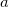と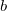の分散共分散行列を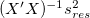によって推定し、との相関係数を求めると、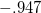となる。 Figure 5.1: 信頼区間と予測区間（carsデータ）

標準誤差
| 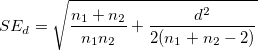 | (5.57) |
とを用いて求める。
メモ |
点推定値として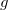などを用いていても、CIは |
Footnotes
 は全反復測定要因の水準数の積、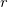は要因Aの水準数。
は全反復測定要因の水準数の積、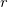は要因Aの水準数。| 伝えるための心理統計 |
 をプールするということらしい。
をプールするということらしい。  から離れるにつれて広くなる。 また、予測区間は信頼区間よりも広い。
から離れるにつれて広くなる。 また、予測区間は信頼区間よりも広い。